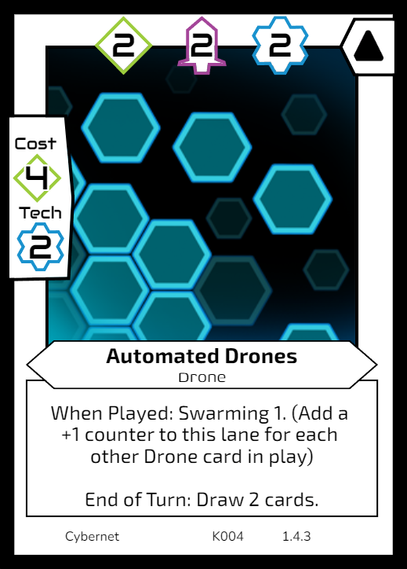

Megalaxian Mining Consortium
The mining consortium is a large company of money hungry capitalists who scour the galaxy for crystal rich planets to mine. Due to increased agression on their mining routes, it’s common for them to employ ex-military troops and battle mechs to defend their operations.
Example Cards
Key Mechanics
Shift, Split Cost, Gain Crystals
Playstyle
Mining-focused, Ramp-up, Combo
Speed
Slow-Medium
Cybernetic Collective
Cybernetic collective of mechanical beings that use crystals as a power source for their large libraries of information. They have advanced drones and satellites that are highly adaptable for mining, research, or destroying their enemies. Their mechanical deign makes them multi-purpose and they can re-deploy their forces rapidly to adapt to the current situation.
Example Cards

Key Mechanics
Swarming, Reduce Cost, Disable
Playstyle
Tech-focused, Defensive, Flexible
Speed
Slow-Medium
Return to Hand, Reduce Cost, Prevent Damage Reactionary, Defensive, Flexible Slow
Caldor’s Brigadeers
Rough and ready guerilla warfare. A group of ex-millitary soldier’s band together under their commander Caldor to put their skills to use in the pursuit of a big pay-day. Take advantage of their numbers on the ground, or deploy their aerial superiority to take out your enemies and claim the bounty for your crew.
Example Cards

Key Mechanics
Discard, Return to Hand, Deal Damage
Playstyle
Attack-focused, Direct Damage, Cards as a Resource
Speed
Fast